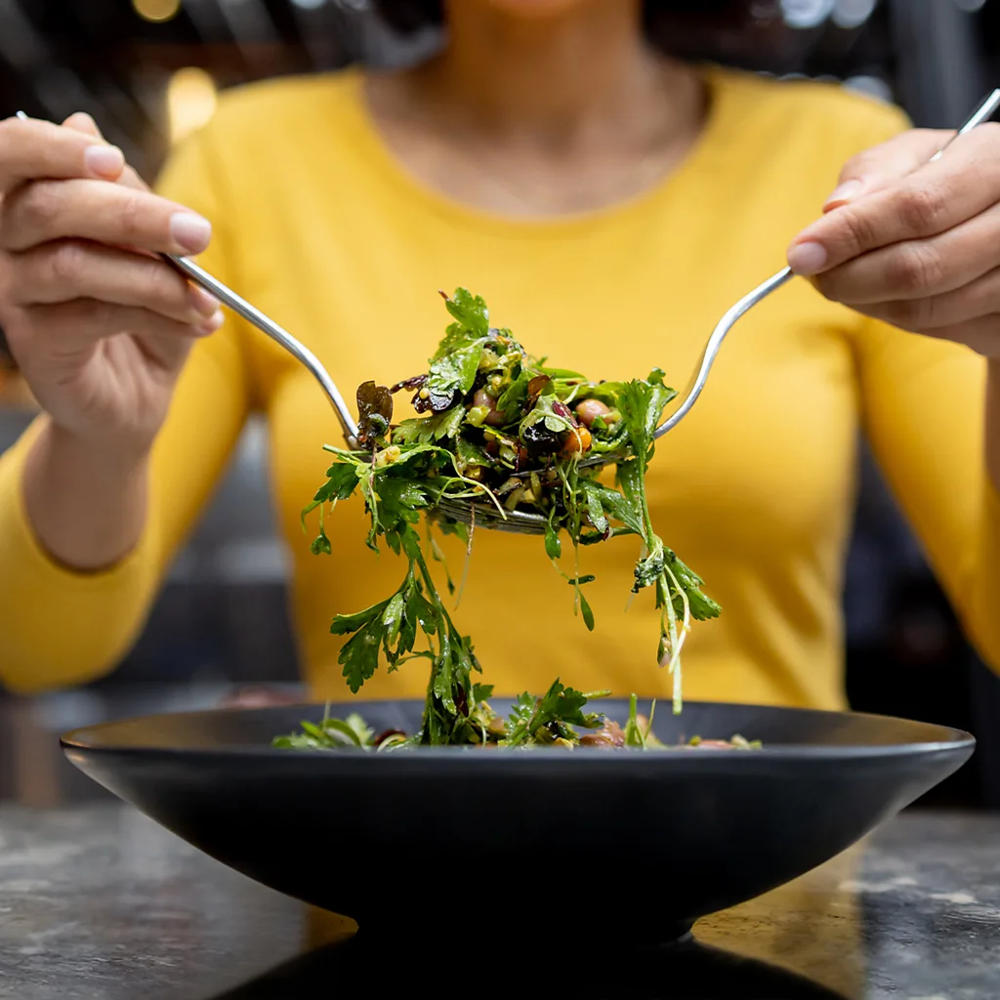

The secret to feeling good after a night's sleep may start during the day.
Here are some tips on how to improve your sleep and feel less tired.
Feeling tired? You're not alone - and you may be thinking about how to tweak your sleep habits as a result.
Often, the strategies we're told will help us feel more rested focus on night-time strategies,
like having a regular bedtime and not scrolling on your phone in bed.
(Read more about some science-backed ways to
improve your sleep).
But getting a good night's sleep isn't just about your nighttime routine. And feeling refreshed isn't always about
getting a good night's sleep. There are other things you can do earlier in the day, while wide-awake, that can have an effect.
Here are five ways to feel more rested, increase your energy levels and, yes, even improve your sleep that don't have to do
with changing your sleep habits themselves.
Around one out of every three people worldwide
lack sufficient iron levels . Particularly susceptible groups
include infants and toddlers, girls and women of reproductive age
(thanks to blood loss during menstruation), pregnant people, endurance athletes,
vegetarians (especially vegans)
and frequent blood donors. But anyone can wind up with an iron deficiency or its potential consequence,
iron-deficiency anaemia – and symptoms can include tiredness and fatigue, but also restlessness and waking at night.
If you frequently feel tired, despite making tweaks to your sleep habits,
it may be worth consulting your physician about testing your levels of ferritin
(a protein that helps store iron), or haemoglobin,
which transports oxygen throughout the body.
Even if you don't have an iron deficiency, being mindful of nutrition can help avoid one.
Sources of the most readily absorbed iron,
called heme iron, include meat, fish and eggs,
while non-heme sources (like beans and green vegetables) can have their bioavailability boosted by
consuming a vitamin C-rich food at the same time.
Several large-scale studies have found that adults who consume more fruits and vegetables report better sleep, while those who consumed more fast food and soft drinks report worse. In particular, research has found that individuals who eat the so-called Mediterranean diet - characterised by high levels of vegetables, fruits, nuts, legumes, whole grains and low-fat dairy - sleep more consistently, and better, than those who do not. Meanwhile, people who slept less than five hours per night have been found to consume lower amounts of iron, zinc, selenium, phosphorus, and magnesium, as well as vitamin C, lutein and selenium, than those who slept more.

It's always hard to untangle the relationship between cause and effect, particularly with topics as tricky to
study as nutrition and sleep. For this reason, it's not clear from most studies whether people eat better when they
sleep more, sleep better because they're eating better, or both.
Still, it's not just that we're likelier to reach for junk food
when we're tired - it can also alter the kind of sleep we get.
One study of 15 young men in Sweden found that when they consumed high fat, high sugar diets their
brain waves changed as they slept
and the quality of deep sleep they had deteriorated. When they switched to a healthier low fat, low sugar diet, their deep sleep improved.
While such studies are small due to the difficulties in collecting brain activity data as someone sleeps - they need to attend
a sleep lab and be monitored through the night - there is plenty of other evidence pointing to the benefits of a healthier diet
on sleep.
Some randomised controlled trials indicate that getting our five (or ten) vegetables a day can boost our sleep.
One study of more than 1,000 young adults who ate less than three servings of fruits and vegetables per day,
for example, looked at their sleep after they increased their intake. Three months later, women (but, interestingly, not men)
were twice as likely to improve their insomnia symptoms, had slightly better sleep quality, and took less time to fall asleep
if they increased their servings to at least six per day, compared to those who had not.